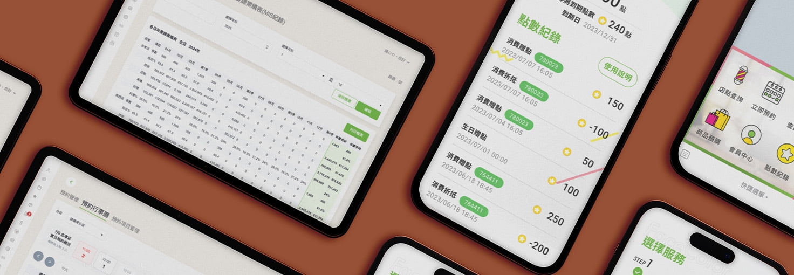

平常做消費者端的介面，比較容易從自己的使用經驗出發去思考—但這次要同時設計 LINE 前台預約流程和後台分店管理系統，發現店家這端要考量的東西多很多。不只是資訊量大，還要兼顧不同角色—客人、櫃檯、店長、總公司，每個人進來要做的事都不一樣，每個畫面要解決的問題也就不一樣
資訊量遠比想像中大：要怎麼在報表、會員、財務數字中，讓重點自然跳出來？總部要看跨店全貌，店長需要管理分店的日常，櫃檯要即時掌握當天狀況—同一套系統裡，怎麼讓每個人都找到屬於自己的那份資訊

預約流程本身其實並不複雜，所以設計上的挑戰，反而是在小螢幕上如何做到畫面乾淨與流暢。我將 LINE 的預約切分為三個極簡的線性步驟——選店、選服務、指定設計師，一下就完成了
現場人員的時間非常碎片。所以在店家的排班上，改用直覺的行事曆介面，搭配不同顏色的標示來區分指定客，運用常見的紅點主動提示預購訂單。這些小巧思是為了讓工作人員在忙碌中「掃一眼」就能掌握現場，不需要點進去一條條查資料
後台報表如果把數據一次全倒出來，畫面會非常難讀。在視覺上，將財務報表的重點強調出來，並將不同分類做出清晰的區隔。我的設計邏輯是「先看整體，再看明細」，太過細微的資料先收起來，讓人能一眼抓到重點，需要時再點開
考量到現場人員習慣把報表印出來對數字，配合硬體列印條件調整了「列印後的樣式優化」，確保密密麻麻的跨店數據能完美收納在一張紙內印出，解決了過去表格切到、跑版或過度空白的問題
從看數字變成找方向－財務報表現在讓數字好讀了，但判讀還是靠店長自己。如果重來，會想更深入研究這些數字要怎麼轉化成適合的視覺圖表，讓數據能幫店長看出下一步